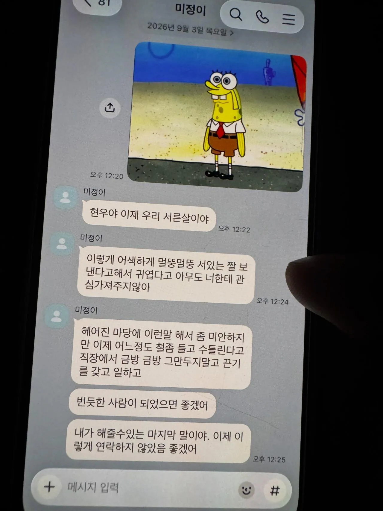

212 · 8 · 13 시간 전 · 원문

현우게이야..
수집 당시 댓글 8개
초고추장 · 8 시간 전
철부지 같은데 전여친은 잘 사귀었었네
나날이꼴려지기나하고 · 8 시간 전
힘내라
일지남 · 8 시간 전
이야 진짜 그냥 칼로찌르는게 덜아프겠다
번째쉬는청년 · 7 시간 전
힘내..
유리멘탈 · 7 시간 전
스바 ai...
코를두번파면코코팜 · 7 시간 전
저정도면 진짜 사랑했던거 맞네
연골어류 · 7 시간 전
힘내
못받은돈받아드려요 · 4 시간 전
너무 나대지 않으면서 계속 기다리면 언젠가 연락 옴. 그날이 하는 날임.
철부지 같은데 전여친은 잘 사귀었었네